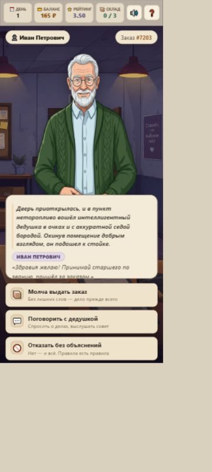
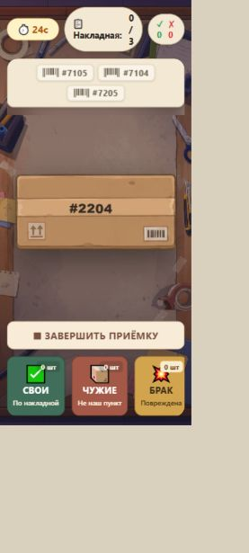

Та же игра. Аккуратнее интерфейс.
Персонажи, фоны, диалоги, коробки и механика сохранены. Изменено только оформление элементов управления.


- Было: яркие градиенты и свечение. Стало: матовые кремовые кнопки и приглушённые цвета сортировки.
- Было: разные рамки и тяжёлые тени. Стало: согласованные скругления, тонкие рамки и короткие мягкие тени.
- Было: бледные мелкие подписи. Стало: более тёмный текст и заметный фокус при работе с клавиатурой.
Открыть игру с новым оформлением
Скачать копию с новым оформлением
На этой странице — снимки. По кнопке выше запускается сама игра. Прогресс демоверсии сохраняется отдельно. Посмотреть исходное оформление · Отдельный файл правок.
Это визуальная версия для просмотра. Игровой код сохранён без изменений; доработка выпуска в Яндекс Играх остаётся отдельной задачей.